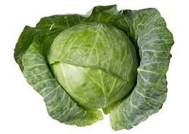
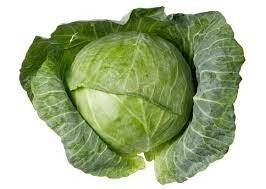
 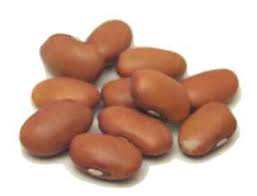
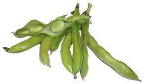
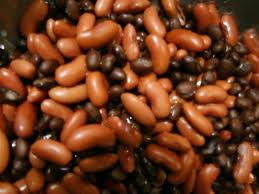
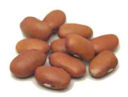
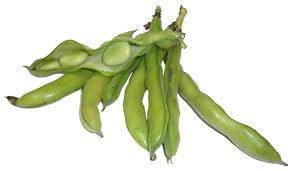
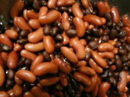
A fruit is a part of a flowering plant that derives from specific
tissues of the flower,
one or more ovaries, and in some cases accessory tissues.
Fruits are the means by which these plants disseminate seeds.
The non-biological definition of a vegetable is largely based on culinary and cultural tradition.
The term bean originally referred to the seed of the broad or fava bean,
but was later expanded to include
members of the New World genus Phaseolus,
such as the common bean and the runner bean, and the related genus
Vigna.
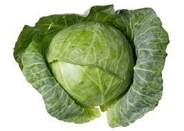
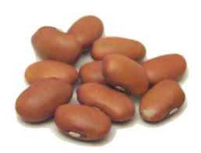
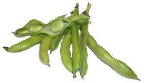
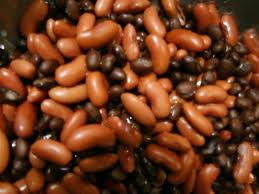